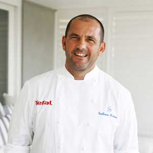

About Us
Best service best food & beast atmosphere!
直到今天我们已经累积了三十多年经营各类咖啡产品的经验与实力,其烘焙技
术千锤百炼、领先潮流；厨房、吧台技术更是精湛。这也是各位学员在这里
培训所要学习的重要内容。我们公司所用的蓝山、夏威夷可娜、摩卡、巴西、
哥伦比亚等各种中性、软性和强性咖啡豆（后面章节将有详细介绍）都是由
我们自己加工厂进行加工.烘焙、配制而成。经营品项包括有各类咖啡、茶、
果汁茶点、牛扒等甚多产品。
关于Steak House
1968:
Steak House于1968年进驻于宝岛台湾开始发展。1997:
1997年与唐城集团合作扎根海南省，1997年Steak House在中国海南繁华的街道开了第一家店。1999:
在北京.广东等地设立分公司。至今:
至今已有1300多家连锁店遍布中国大江南北，成为 目前国内最受欢迎的咖啡连锁餐厅之一。在咖啡出 品方面，Steak House执著于"香醇、甘美"的极致品 质的制作理念；在店面设计方面，Steak House融合 了经典与时尚的理念，独具一格的经营模式，让 Steak House在短短的几年内获得了令其他竞争同业 望尘莫及的辉煌成绩。Steak House公司总部设在繁 华的上海市，旗下的加盟店遍布中国大陆各大中型 城市，公司的品牌性标识已成为国内一道著名风景 线，俨然为欧陆人文与风情的窗口。Our Cooks

Bradley Grosh
从事养生精致料理近20年，曾 跟随日本人，法国人，学习养 生精致料理制造,在国外学习工 作多年,一直不断的学习创新

David Austin
当今世界西餐厨艺界的领袖，现 代浪漫精致法式料理厨艺的 “教父”。
- 
Patrick Pool
中国烹饪大师，中国烹饪协会 副会长。世界御厨协会亚太区 副主席。北京大董烤鸭店董 长兼厨艺总监。

Dayle Peters
米其林二星主厨，纽约布鲁得 厨房，北京前门23号布鲁宫法 国餐厅主厨兼老板。最具中国 情节的法国名厨。博古斯世界 烹饪大赛资深评委。
Copyrights @2016 All Rights Reserved By Steak House